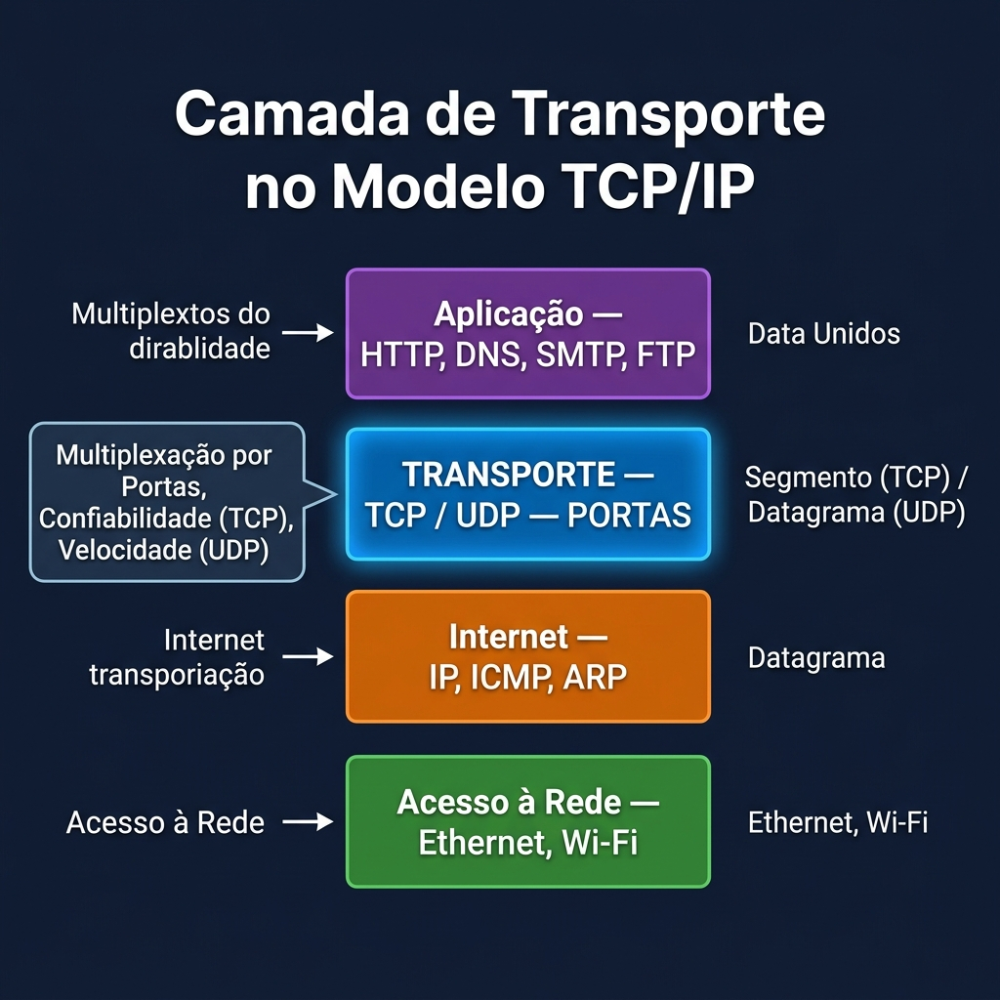
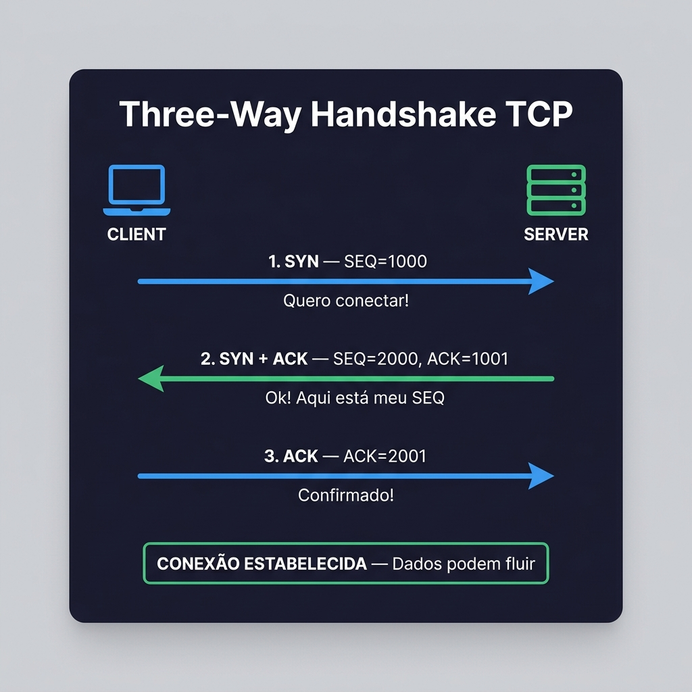
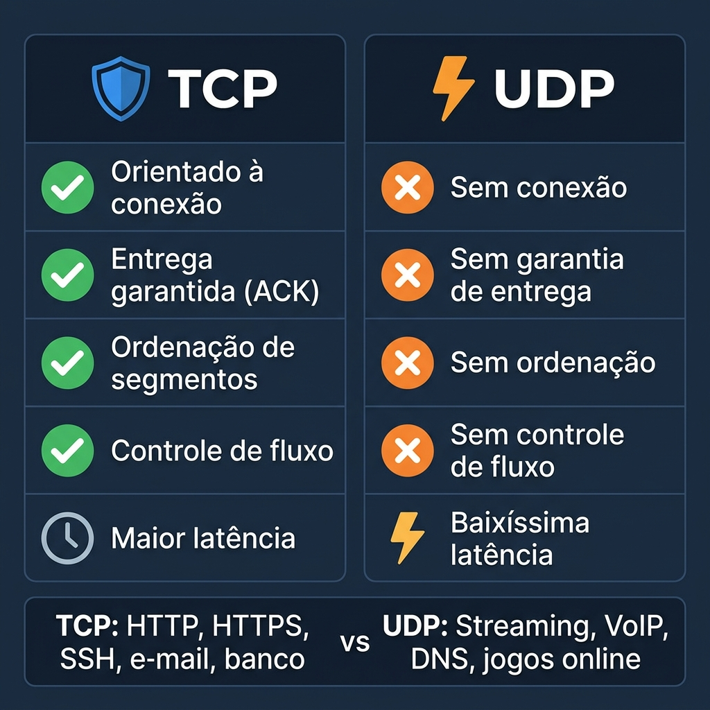
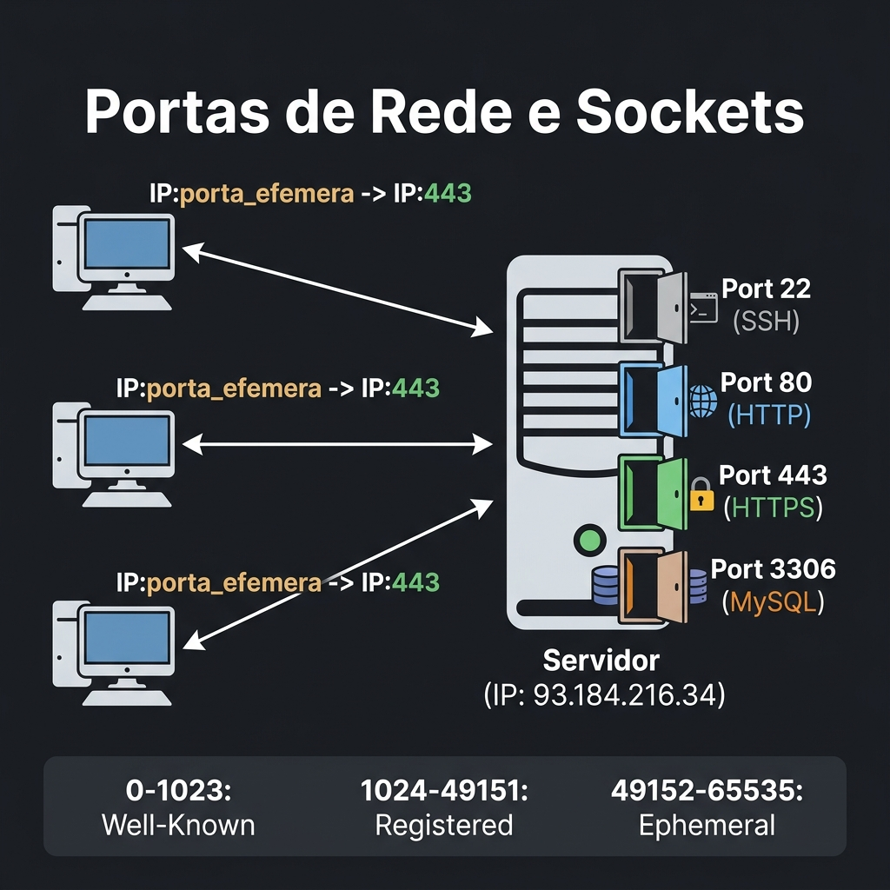

disciplina: Redes de Computadores I codigo: “49325” aula: 7 titulo: “Camada de Transporte — TCP, UDP, Portas e Three-Way Handshake” tipo: teorica semana: 7 data: 2026-05-07 status: publicado tags:
- redes
- tcp
- udp
- transporte
- handshake
- portas publicar: true
🖥️ Aula - 07: Camada de Transporte — TCP, UDP, Portas e Three-Way Handshake
⚠️ Material de referência — não é a aula desta semana
Esta página vem de uma oferta anterior da disciplina e continua no ar porque o conteúdo serve para estudo. A numeração dela não corresponde à semana do calendário de 2026-2 — o calendário que vale é o do Plano de Ensino e Contrato. Se ela pedir uma ferramenta antes da semana em que o plano a introduz, siga o plano.
Disciplina: Redes de Computadores I (Cód. 49325)
Curso: Sistemas de Informação — Uniube
Semana: 7 | Quarta-feira
Professor: Romualdo Mathias Filho
Tipo: 📘 Teórica
Tópicos: Camada de Transporte, TCP, UDP, Three-Way Handshake, Portas, Multiplexação, Controle de Fluxo
💬 “O IP sabe onde entregar o pacote. O TCP sabe como garantir que ele chegou inteiro, na ordem certa e sem erros.”
🖥️ Aula - 07: Camada de Transporte — TCP, UDP, Portas e Three-Way Handshake
Ao final desta aula, os alunos serão capazes de:
- Compreender o papel da Camada de Transporte no modelo TCP/IP e OSI.
- Distinguir as características, vantagens e casos de uso de TCP e UDP.
- Explicar o processo de Three-Way Handshake do TCP passo a passo.
- Entender o conceito de portas de rede e como elas permitem que múltiplos serviços funcionem no mesmo host.
- Identificar as portas mais comuns (HTTP, HTTPS, SSH, DNS, SMTP etc.).
- Relacionar esses conceitos com aplicações do cotidiano (streaming, WhatsApp, banco online, etc.).
🖥️ Aula - 07: Camada de Transporte — TCP, UDP, Portas e Three-Way Handshake
| Conceito (Aulas Anteriores) | Conexão com hoje |
|---|---|
| Endereço IP (Camada 3) | O IP entrega o pacote ao host correto. A Camada de Transporte entrega ao processo correto (via porta). |
| Roteamento e Encaminhamento | Vimos como pacotes atravessam redes. Hoje, vemos o que acontece dentro do host após a chegada. |
| Pacotes e Encapsulamento | Cada camada adiciona um cabeçalho. Hoje, estudamos o cabeçalho de Transporte (TCP/UDP). |
| Modelo OSI vs TCP/IP (Aula 05) | A Camada 4 (Transporte) do OSI corresponde à Camada de Transporte do TCP/IP — é exatamente aqui. |
💡 Metáfora central: O IP é como o CEP de uma casa. A porta TCP/UDP é o número do apartamento dentro do prédio. Sem o número do apartamento, a correspondência chega ao endereço certo, mas ninguém sabe a qual morador entregar.
🖥️ Aula - 07: Camada de Transporte — TCP, UDP, Portas e Three-Way Handshake
🖥️ Aula - 07: Camada de Transporte — TCP, UDP, Portas e Three-Way Handshake
Imagine um computador recebendo dados simultaneamente de:
- Uma aba do navegador carregando uma página web
- O WhatsApp Web recebendo mensagens
- Um streaming de música tocando em segundo plano
- Uma chamada de vídeo em andamento
Todos esses dados chegam pelo mesmo endereço IP. Como o sistema operacional sabe qual dado pertence a qual aplicação?
A resposta são as portas — números que identificam processos específicos dentro de um host.
🖥️ Aula - 07: Camada de Transporte — TCP, UDP, Portas e Three-Way Handshake
| Função | Descrição |
|---|---|
| Multiplexação | Múltiplas aplicações usam a rede ao mesmo tempo, identificadas por portas |
| Demultiplexação | O SO redireciona os dados recebidos para a aplicação correta |
| Controle de erros | TCP verifica se os dados chegaram íntegros (via checksum) |
| Controle de fluxo | TCP ajusta a velocidade de envio para não sobrecarregar o receptor |
| Controle de congestionamento | TCP reduz a velocidade se a rede estiver congestionada |
| Entrega ordenada | TCP garante que os segmentos cheguem na ordem correta |

Figura 1: Posição da Camada de Transporte no modelo TCP/IP e sua função de multiplexação por portas.
💡 Exemplo brasileiro: Pense no Pix. Quando você faz uma transferência, o banco usa TCP para garantir que cada centavo chegue, sem erros, na ordem certa. UDP seria inaceitável nesse cenário — imagina perder metade da transação!
🖥️ Aula - 07: Camada de Transporte — TCP, UDP, Portas e Three-Way Handshake
O TCP é o protocolo de transporte orientado à conexão. Antes de enviar qualquer dado, ele estabelece uma conexão formal entre emissor e receptor.
🖥️ Aula - 07: Camada de Transporte — TCP, UDP, Portas e Three-Way Handshake
| Característica | Detalhe |
|---|---|
| Orientado à conexão | Exige estabelecimento de conexão antes de transmitir (Three-Way Handshake) |
| Confiável | Garante entrega — reenvia pacotes perdidos automaticamente |
| Entrega ordenada | Numera cada segmento; o receptor reordena se necessário |
| Controle de fluxo | Usa janela deslizante (sliding window) para regular o ritmo de envio |
| Controle de congestionamento | Reduz taxa de envio quando detecta congestionamento na rede |
| Verificação de integridade | Checksum em cada segmento |
🖥️ Aula - 07: Camada de Transporte — TCP, UDP, Portas e Three-Way Handshake
Emissor Receptor
| |
|--- [Three-Way Handshake] ------->| (1) Estabelece conexão
| |
|--- SEG 1 (bytes 1-1000) -------->|
|<-- ACK 1001 ---------------------| (2) Transferência de dados
|--- SEG 2 (bytes 1001-2000) ----->| com confirmação
|<-- ACK 2001 ---------------------|
| |
|--- [FIN / FIN-ACK / ACK] ------->| (3) Encerramento da conexão
🖥️ Aula - 07: Camada de Transporte — TCP, UDP, Portas e Three-Way Handshake
0 1 2 3
0 1 2 3 4 5 6 7 8 9 0 1 2 3 4 5 6 7 8 9 0 1 2 3 4 5 6 7 8 9 0 1
+-+-+-+-+-+-+-+-+-+-+-+-+-+-+-+-+-+-+-+-+-+-+-+-+-+-+-+-+-+-+-+-+
| Porta Origem | Porta Destino |
+-+-+-+-+-+-+-+-+-+-+-+-+-+-+-+-+-+-+-+-+-+-+-+-+-+-+-+-+-+-+-+-+
| Número de Sequência |
+-+-+-+-+-+-+-+-+-+-+-+-+-+-+-+-+-+-+-+-+-+-+-+-+-+-+-+-+-+-+-+-+
| Número de Confirmação (ACK) |
+-+-+-+-+-+-+-+-+-+-+-+-+-+-+-+-+-+-+-+-+-+-+-+-+-+-+-+-+-+-+-+-+
| Data | |U|A|P|R|S|F| |
| Offs. | Reserv. |R|C|S|S|Y|I| Janela |
| | |G|K|H|T|N|N| |
+-+-+-+-+-+-+-+-+-+-+-+-+-+-+-+-+-+-+-+-+-+-+-+-+-+-+-+-+-+-+-+-+
| Checksum | Ponteiro Urgente |
+-+-+-+-+-+-+-+-+-+-+-+-+-+-+-+-+-+-+-+-+-+-+-+-+-+-+-+-+-+-+-+-+
- SYN — Synchronize: inicia a conexão
- ACK — Acknowledgment: confirma recebimento
- FIN — Finish: encerra a conexão
- RST — Reset: aborta a conexão abruptamente
- Número de Sequência — identifica o byte inicial do segmento
- Número de Confirmação — indica o próximo byte esperado
🖥️ Aula - 07: Camada de Transporte — TCP, UDP, Portas e Three-Way Handshake
O Three-Way Handshake é o ritual de três mensagens que o TCP usa para sincronizar cliente e servidor antes de transmitir dados.
🖥️ Aula - 07: Camada de Transporte — TCP, UDP, Portas e Three-Way Handshake
CLIENTE SERVIDOR
| |
|--- 1. SYN (SEQ=1000) ------------->| "Quero conectar. Meu SEQ é 1000."
| |
|<-- 2. SYN+ACK (SEQ=2000,ACK=1001) -| "Ok! Meu SEQ é 2000. Confirmo SEQ=1001."
| |
|--- 3. ACK (ACK=2001) ------------->| "Perfeito. Confirmo SEQ=2001. Pode falar!"
| |
|<=== CONEXÃO ESTABELECIDA ==========>|
| |
|=== DADOS FLUINDO ===================|

Figura 2: Diagrama do Three-Way Handshake TCP — as três mensagens que estabelecem uma conexão confiável.
🖥️ Aula - 07: Camada de Transporte — TCP, UDP, Portas e Three-Way Handshake
Com apenas 2 mensagens (SYN + SYN-ACK), o cliente saberia que o servidor o ouviu, mas o servidor não saberia se o cliente recebeu seu SYN-ACK. O terceiro ACK fecha esse ciclo — ambos confirmam que ambos estão sincronizados.
💡 Analogia cotidiana: É como uma ligação telefônica:
- “Alô?” (SYN)
- “Alô! Tô te ouvindo, pode falar?” (SYN-ACK)
- “Tô te ouvindo também, pode começar!” (ACK)
Só depois das três frases a conversa de fato começa.
🖥️ Aula - 07: Camada de Transporte — TCP, UDP, Portas e Three-Way Handshake
Para encerrar, o TCP usa 4 mensagens (porque cada lado encerra sua direção de forma independente):
CLIENTE SERVIDOR
|--- FIN --------------------------->| "Terminei de enviar."
|<-- ACK -----------------------------| "Ok, recebi."
|<-- FIN -----------------------------| "Eu também terminei."
|--- ACK --------------------------->| "Ok, conexão encerrada."
🖥️ Aula - 07: Camada de Transporte — TCP, UDP, Portas e Three-Way Handshake
O atacante explora o Handshake enviando milhares de SYNs falsos. O servidor responde com SYN-ACK e aguarda o ACK que nunca vem, consumindo recursos com conexões “semiabertas” até travar.
| Ataque | Descrição |
|---|---|
| SYN Flood | Envia SYNs com IPs falsos — servidor fica aguardando ACKs que nunca chegam |
| Prevenção | SYN Cookies, Rate Limiting, Firewall com inspeção de estado (Stateful) |
🖥️ Aula - 07: Camada de Transporte — TCP, UDP, Portas e Three-Way Handshake
O UDP é o protocolo de transporte sem conexão — envia dados diretamente, sem handshake, sem confirmação, sem controle de ordem.
🖥️ Aula - 07: Camada de Transporte — TCP, UDP, Portas e Three-Way Handshake
| Característica | Detalhe |
|---|---|
| Sem conexão | Não há handshake — os dados são enviados diretamente |
| Não confiável | Não há garantia de entrega; pacotes perdidos não são reenviados |
| Sem ordenação | Datagramas podem chegar fora de ordem |
| Baixa latência | Overhead mínimo — cabeçalho de apenas 8 bytes |
| Alta velocidade | Sem espera por confirmações — ideal para tempo real |
🖥️ Aula - 07: Camada de Transporte — TCP, UDP, Portas e Three-Way Handshake
0 1 2 3
0 1 2 3 4 5 6 7 8 9 0 1 2 3 4 5 6 7 8 9 0 1 2 3 4 5 6 7 8 9 0 1
+-+-+-+-+-+-+-+-+-+-+-+-+-+-+-+-+-+-+-+-+-+-+-+-+-+-+-+-+-+-+-+-+
| Porta Origem | Porta Destino |
+-+-+-+-+-+-+-+-+-+-+-+-+-+-+-+-+-+-+-+-+-+-+-+-+-+-+-+-+-+-+-+-+
| Comprimento | Checksum |
+-+-+-+-+-+-+-+-+-+-+-+-+-+-+-+-+-+-+-+-+-+-+-+-+-+-+-+-+-+-+-+-+
Apenas 4 campos! Compare com os 10+ campos do TCP.
💡 Analogia: UDP é como enviar uma carta pelos Correios sem AR (Aviso de Recebimento). Você despacha e não sabe se chegou. TCP é como enviar com AR — você recebe confirmação de entrega.

Figura 3: Comparativo TCP vs UDP — características e casos de uso de cada protocolo.
🖥️ Aula - 07: Camada de Transporte — TCP, UDP, Portas e Three-Way Handshake
| Aspecto | TCP | UDP |
|---|---|---|
| Conexão | Orientado à conexão | Sem conexão |
| Confiabilidade | Alta — garante entrega | Baixa — não garante |
| Ordenação | Sim | Não |
| Velocidade | Menor (overhead do handshake e ACKs) | Maior (mínimo overhead) |
| Controle de fluxo | Sim | Não |
| Tamanho do cabeçalho | 20-60 bytes | 8 bytes fixos |
| Quando usar | Quando a integridade importa mais que a velocidade | Quando a velocidade importa mais que a integridade |
| Exemplos | HTTP/HTTPS, e-mail (SMTP/IMAP), transferência de arquivos (FTP), SSH | Streaming (Netflix, YouTube), VoIP, jogos online, DNS, DHCP |
🖥️ Aula - 07: Camada de Transporte — TCP, UDP, Portas e Three-Way Handshake
- Perder um frame de vídeo? Aceitável — o vídeo continua. → UDP
- Perder um byte de uma transferência bancária? Catastrófico. → TCP
- DNS? Consulta rápida, tolerável repetir se falhar. → UDP (mas usa TCP para transferências de zona)
🖥️ Aula - 07: Camada de Transporte — TCP, UDP, Portas e Three-Way Handshake
🖥️ Aula - 07: Camada de Transporte — TCP, UDP, Portas e Three-Way Handshake
Uma porta é um número de 16 bits (0 a 65.535) que identifica um processo ou serviço específico dentro de um host. O par (IP, Porta) forma um socket — o endereço completo de um processo na rede.
Endereço completo de um serviço:
192.168.1.10 : 443
└────────────┘ └───┘
Endereço IP Porta
(qual host) (qual processo)
Socket: (192.168.1.10, 443) = servidor HTTPS nessa máquina
🖥️ Aula - 07: Camada de Transporte — TCP, UDP, Portas e Three-Way Handshake
| Faixa | Nome | Uso |
|---|---|---|
| 0 – 1023 | Well-Known (Bem conhecidas) | Protocolos padronizados (HTTP, SSH, DNS…) |
| 1024 – 49151 | Registered (Registradas) | Aplicações específicas (MySQL: 3306, RDP: 3389…) |
| 49152 – 65535 | Dynamic/Ephemeral (Efêmeras) | Portas temporárias usadas pelos clientes nas conexões |
🖥️ Aula - 07: Camada de Transporte — TCP, UDP, Portas e Three-Way Handshake
| Porta | Protocolo | Serviço | Transporte |
|---|---|---|---|
| 20/21 | FTP | Transferência de arquivos | TCP |
| 22 | SSH | Acesso remoto seguro | TCP |
| 23 | Telnet | Acesso remoto (inseguro — evitar!) | TCP |
| 25 | SMTP | Envio de e-mail | TCP |
| 53 | DNS | Resolução de nomes | UDP (consulta) / TCP (zona) |
| 67/68 | DHCP | Configuração automática de IP | UDP |
| 80 | HTTP | Web sem criptografia | TCP |
| 110 | POP3 | Recebimento de e-mail | TCP |
| 143 | IMAP | Acesso a e-mail no servidor | TCP |
| 443 | HTTPS | Web com criptografia (TLS/SSL) | TCP |
| 3306 | MySQL | Banco de dados | TCP |
| 3389 | RDP | Desktop Remoto (Windows) | TCP |
💡 Dica de prova: Porta 80 = HTTP, Porta 443 = HTTPS, Porta 22 = SSH, Porta 53 = DNS. Essas 4 são cobradas em todo concurso de TI e certificação de redes.

Figura 4: Portas de rede e sockets — múltiplos clientes acessando diferentes serviços no mesmo servidor.
🖥️ Aula - 07: Camada de Transporte — TCP, UDP, Portas e Three-Way Handshake
CLIENTE (Navegador) SERVIDOR Web
IP: 192.168.1.5 IP: 93.184.216.34
Porta efêmera: 52341 Porta destino: 443
Pacote saindo:
Origem: 192.168.1.5:52341
Destino: 93.184.216.34:443
Resposta voltando:
Origem: 93.184.216.34:443
Destino: 192.168.1.5:52341
O cliente usa uma porta efêmera (gerada aleatoriamente acima de 49152) para identificar aquela conexão específica. Assim, você pode ter 10 abas do navegador abertas — cada uma com uma porta efêmera diferente, mas todas falando com a porta 443 do servidor.
🖥️ Aula - 07: Camada de Transporte — TCP, UDP, Portas e Three-Way Handshake
| Conceito | Definição |
|---|---|
| Camada de Transporte | Responsável pela comunicação processo a processo (identifica aplicações via portas). |
| TCP | Protocolo orientado à conexão, confiável, com handshake, ACKs e controle de fluxo. |
| UDP | Protocolo sem conexão, rápido, sem garantias — ideal para tempo real. |
| Three-Way Handshake | Processo de 3 mensagens (SYN → SYN-ACK → ACK) que estabelece uma conexão TCP. |
| SYN Flood | Ataque que explora o handshake enviando SYNs falsos para esgotar recursos do servidor. |
| Porta | Número de 16 bits que identifica um processo/serviço dentro de um host. |
| Socket | Par (IP, Porta) que endereça completamente um processo na rede. |
| Porta Well-Known | Portas 0–1023 reservadas para protocolos padronizados. |
| Porta Efêmera | Porta temporária usada pelo cliente para identificar uma conexão específica. |
| Multiplexação | Capacidade de múltiplas aplicações usarem a rede simultaneamente, via portas. |
🖥️ Aula - 07: Camada de Transporte — TCP, UDP, Portas e Three-Way Handshake
Responda no caderno ou no Moodle:
-
Analise o cenário: O WhatsApp usa UDP para chamadas de voz e TCP para envio de mensagens de texto. Explique tecnicamente por que esse design faz sentido.
-
Identifique: Para cada serviço abaixo, indique a porta padrão e o protocolo de transporte (TCP ou UDP):
- Acesso remoto seguro a um servidor Linux
- Carregamento de uma página bancária no navegador
- Consulta ao nome
google.compara obter seu IP - Recebimento de IP automático ao conectar no Wi-Fi
-
Diagrame: Desenhe (à mão ou digital) o Three-Way Handshake TCP entre seu computador e o servidor
rofilho.github.io. Inclua as flags SYN, SYN-ACK e ACK com números de sequência fictícios.
🏁 Próxima aula: Prática no Wireshark — capturando pacotes TCP reais e observando o Handshake acontecendo em tempo real!
🖥️ Aula - 07: Camada de Transporte — TCP, UDP, Portas e Three-Way Handshake
-
RFC 793 — Transmission Control Protocol (IETF)
Especificação original do TCP, de 1981. Vale a leitura da seção 3.4 (Establishing a Connection) para ver o Handshake definido formalmente pelos criadores da internet.
-
RFC 768 — User Datagram Protocol (IETF)
O RFC do UDP tem apenas 3 páginas — a prova mais elegante de que o protocolo é propositalmente simples.
🖥️ Aula - 07: Camada de Transporte — TCP, UDP, Portas e Three-Way Handshake
- KUROSE, J. F.; ROSS, K. W. Redes de Computadores e a Internet. 8. ed. Pearson, 2021. Cap. 3 — Camada de Transporte (Seções 3.1 a 3.5).
- TANENBAUM, A. S.; FEAMSTER, N.; WETHERALL, D. J. Redes de Computadores. 6. ed. Pearson, 2021. Cap. 6 — Camada de Transporte.
- FOROUZAN, B. A. Comunicação de Dados e Redes de Computadores. 4. ed. McGraw-Hill, 2008. Cap. 23 — TCP e Cap. 22 — UDP.
- IETF. RFC 793 — Transmission Control Protocol. 1981. Disponível em: https://datatracker.ietf.org/doc/html/rfc793
Última atualização: 2026-04-29 | Status: publicado